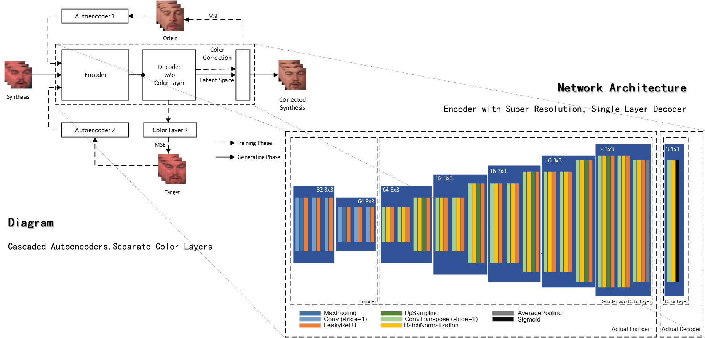
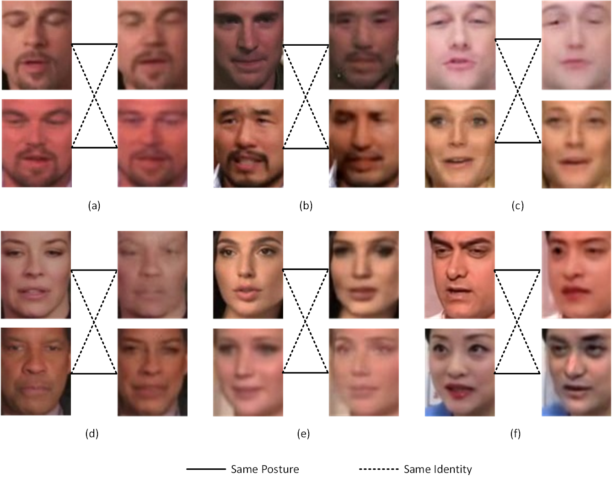

Projects
The Generation and Detection of Deepfakes, Dec. 2019 - May 2020
Code: https://github.com/Greenere/faceswap
This is my graduate design for my bachelor's degree. The major focus is the generation of deepfakes, more specificly, face swapped videos. I adjust the existing method with some minor improvements for generation part. The detection of deepfakes appears as a survey in the final paper.
Scheme
It takes a lot of work for auxiliary modules to construct an end-to-end pipeline as shown below:

Each video is first digested into frames, ceating two small datasets of faces after Face Detection and Face Alignment. These two datasets are then used to train Intracoder and Color Correction modules. At inference, these two modules together swap the original faces but maintain the original color, creating a new datasets of swapped faces. These swapped faces are then fused with corresponding original face and de-aligned to the original posture. Merging the original background with de-aligned swapped face creates a frame of final deepfake. Assemble these frames, there comes the final deepfake.
I adopt a public MTCNN for Face Detection, warp affine for Face Alignment and Posture Reduction, Poisson image blending for Image Fusion. The major works are Intracoder and Color Correction.
Intracoder
The structure of Intracoder is shown below:

Just like the initial scheme of deepfakes, two auto-encoders share the same encoder that force the encoder to map two types of faces into the same latent space. The decoders are owned distinctly by each type of face. After sufficient training, we can then map the origin face into the domain of target face. The synthesized face has the posture of original face and the identity of target face. The posture information is more abstract and the identity information is more concrete. To maintain the more abstract posture, I use a more deeper encoder compared with decoder.
Color Correction
Most of other implementations use a classical method to correct the color:
Reinhard E, Adhikhmin M, Gooch B, et al. Color transfer between images[J]. IEEE Computer graphics and applications, 2001.
In my case, I also want the color correction module to super-resolute the swapped face and correct artifacts brought by Intracoder. So I use another pair of auto-encoders as shown below:

Color information is rather shallow, so the decoder is actually only one layer deep.
Results
The performance of swapping faces is satisfactory:

But the deepfake video generated is not as good as the public implementations:
 |
 |
 |
| Gesture donator | Identity donator | Deepfake generated |
This is expected as I use no temporal information. It is easy to see inter-frame artifacts from the generated deepfake.
"WEIBE" weibo emotion analysis system, Nov. 2019 - Dec. 2019
Code: https://github.com/Greenere/weibe
This is a course project for the course, Capstone Project in Big Data Processing System. The core idea of this project is to fetch the trending topics of weibo (the Chinese version of Twitter) and analyze corresponding posts for the emotion tendencies concealed in each tweet.
I am responsible for the system rather than the algorithm behind the emotion analysis. The scheme I designed for this system is shown as below.

The dark parts are the off-shelf programs utilized by this system and the light parts are our own modules. I write the Web Crawler in Python with the help of Selenium , driving a chrome browser to fetch the web pages of Weibo, collect trending topics and posts and put them into a Mongodb database. The Server is also composed with Python using Flask and Gevent. A very basic static pages server is capable enough for our purpose. The Frontend is coded with the basic web languages, HTML for structure, CSS for style and JavaScript for actions.


Due to the limited computational resources, we limit the number of posts fetched for each trending topic. It is not a really "big" data processing system, but the results are actually very informative. Unexpectedly, we happened to catch the trending topics invoked by an earthquake near Wuhan and the initial of COVID-19 outbreak.
More details can be found in the github repository.
"WELLMAIL" e-mail client, Nov. 2018 - Dec. 2018
Code: https://github.com/Greenere/wellmail
This is the very first project I ever participated that could be referred as a project. For the course, Software Project, an e-mail client is required to be designed and implemented.
We were splitted into groups of three, and we had literally zero experience about how to begin. Most of the other groups chose Java to programmed it, while we chose Python after a few consideration. Python is light, new and all three members wanted to proceed into relevant areas that requires Python's help.

It took one week for us to familiarize with Python. I first divided the whole project into three parts: network module, management module and graphic user interface module. Each of us was then in charge of one of the modules. But later we discovered that most of our work would be related to graphic interface, which was quite different from those programs with consoles we coded before.
Therefore, I redivided the project according to the lagical relationship of graphic user interfaces. The logical relationship is shown below. I was in charge of the Recieve Box Module and the Main Module.

A user first logs in through the Log Module, and then the Main Module communicates with the email service, fetching the information. Then it is the Recieve Box Module that appears in front of the user. Switches for the Writing Module, Setting Module, Contact Module, etc. are designed as buttons on the left of the Main Module. A search bar is placed above, with which the user can fetch the relevant e-mails with key words.
We named this client as "WELLMAIL", "W" stands for Yun Wang, "L" and "L" stand for Xin Liu and Haoyang Li, and "E" stands for e-mail. This project was designated as one of the best among our peers, although there were many unsolved problems as a maiden work. Anyway, the most important skill I got from this experience was the use of Python and the basic ability to develop a software with graphic user interface.